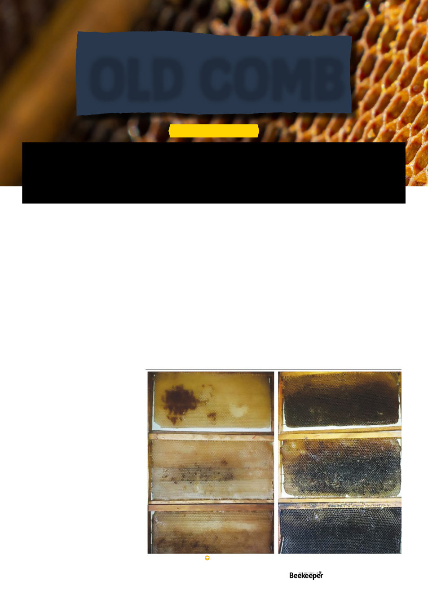

This last category you may encounter when a neighbour
finally prevails upon you to check the hive they haven’t
inspected in years, the dark comb by this point bulges out
into buttresses of burr comb, concreting frames together,
some cells look too small for bees, if you melt it down
you’ll learn it’s seemingly all slumgum with a tiny fraction
of actual wax remaining. And it is delicious, absolutely
delicious, in the humble opinion of small hive beetles and
wax moths, to whom it may as well be literal chocolate. It
is primarily due to this last fact that I initially got in the habit
of annually cycling old brood comb out. I came across a
recent paper on the effects of comb age on queens which
led me down a rabbit-hole of related studies on comb age
effects and the findings convinced me that rotating out
old brood comb is extremely worthwhile.
Let us begin with a 2020 study on “the relationship
between comb age and performance of honey bee
colonies”.1 This involved 20 hives at the Al-Ahsa oasis
in Saudi Arabia. The hives were
equalised for size (7 frames of
bees) at the beginning of the
study, requeened with mated
sister queens, and then given
drawn frames that were entirely
the same age per hive, 1-4 years
old. So some had entirely one year
old comb, some had entirely 2, 3,
or 4 year old comb, and all other
variables were equalised as much
as possible.
After three months, the hives
with 1 year old comb had
produced an average of 5.25kg of
honey, 2 year: 4.90, 3 year: 4.65,
4 year 4.45kg, a clear correlation
with the 4 year old comb hives
making 15% less honey than the
youngest comb. The four-year-old
comb hives produced 19.7% less
pollen and had 23.98% smaller
populations.
Beeswax comes in a variety of colours. There’s the bone-white pieces of comb a
swarm begins making just to pass the time as they spend a day or two on a bush; the
creamy yellow of comb in the honey supers, having picked up the golden hues of its
delicious cargo; the cinnamon brown of a solid wall of fresh brood comb… and the dark
mahogany chocolate of old old brood comb.
ARTICLE BY KRIS FRICKE
Another study, in Egypt, which came out in 20212 divided
colonies into groups with either combs aged 1-3 years or
combs aged 4-6 years, and the study itself went on for
a year. Again the hives were made as equal as possible
and began with six frames of bees each. Newly emerged
worker bees on the youngest comb were found to weigh
an average of 114.89mg at the beginning of the study,
comb a year older already reduced size by 5%, and the
worker bees emerging from the now 5-7 year old comb at
the end of the study weighed 78.21mg, only 68% the size
of the newly emerging bees from young comb (and we’ll
get to the effects of bees being smaller in a moment). The
reason for this is of course that every time a bee pupates
in brood comb a layer of its cocoon casing gets embedded
into the wall, reducing the diameter of the cell by about
15% in four years. Bees in the hives with new comb put
67.18% more royal jelly in queen cells, produced 27.98%
larger queens, stored 67.34% more pollen, and 88.83%
New comb (left) Old comb (right) Taha 2021.
OLD COMB
Vol. 126 | No. 01 |
Celebrating 125 years | 15